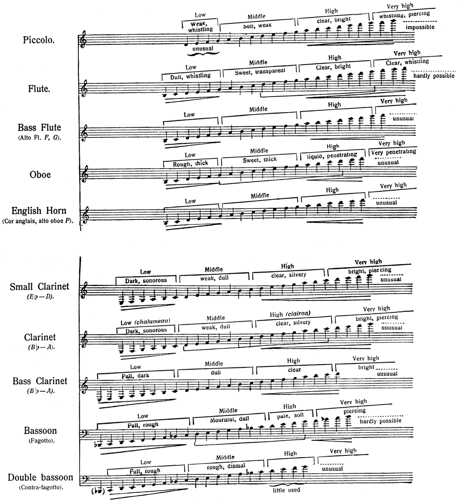
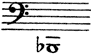
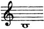

配器法原理：繁體中文版
木管樂器
木管樂器
除了樂手人數可以增減，弦樂組的五個構成聲部保持不變，足以符合各種管弦樂總譜的需求。木管組則不同：聲部數與所能提供的音量都會變動，作曲家可以自由選擇。大致可分成三類：雙管、三管與四管編制（見原書第13頁的表）。
表中阿拉伯數字表示各樂器的樂手人數；羅馬數字表示第1、第2等聲部。整項放在括號內的樂器，不另加樂手，而由既有樂手放下平常的樂器，改奏這一件。通常第一長笛、第一雙簧管、第一豎笛與第一低音管不更換樂器；他們的聲部重要，不宜來回適應不同吹口。因此，短笛、中音長笛、英國管、高音豎笛、低音豎笛與倍低音管，多交由各組第二、第三樂手兼奏，他們比較習慣使用這些特殊樂器。-13-
| 木管 雙管編制 | 木管 三管編制 | 木管 四管編制 |
| （II兼短笛） | （III兼短笛） | 1短笛（IV） |
| 2長笛 I、II | 3長笛 I、II、III | 3長笛 I、II、III |
| （II兼中音長笛） | （III兼中音長笛） | |
| 2雙簧管 I、II | 2雙簧管 I、II | 3雙簧管 I、II、III |
| （II兼英國管） | 1英國管（III） | 1英國管（IV） |
| （II兼高音豎笛） | （II兼高音豎笛） | |
| 2豎笛 I、II | 3豎笛 I、II、III | 3豎笛 I、II、III |
| （II兼低音豎笛） | （III兼低音豎笛） | 1低音豎笛（IV） |
| 2低音管 I、II | 2低音管 I、II | 3低音管 I、II、III |
| 1倍低音管（III） | 1倍低音管（IV） |
第一類也可以固定增加一個短笛聲部。有時，作曲家會寫兩支短笛、兩支英國管等，仍由原來三管或四管編制的人數負責，不再增加樂手。
註一：採用第一類編制的作曲家，在大型作品，例如神劇、歌劇或交響曲中，可以短暫或較長時間加入特殊樂器，稱為「額外樂器」（extras）。每一件都需要增聘一名樂手，但不用全曲都演奏。梅耶貝爾喜歡這樣做；其他作曲家，例如葛令卡，則避免為了額外樂器增加人數，可參看《魯斯蘭》的英國管聲部。華格納三類都用過：《唐懷瑟》用雙管，《崔斯坦》用三管，《指環》用四管。
註二：我的作品中，只有《姆拉達》採用四管編制。《伊凡雷帝》、《薩特闊》、《薩爾坦王的故事》、《隱城基捷日傳說》與《金雞》都屬於第二類；其他作品使用雙管，搭配數量不一的額外樂器。《聖誕夜》有兩支雙簧管、兩支低音管、三支長笛與三支豎笛，介於兩類之間。
就構成樂器而言，弦樂組有相當的音色變化，也有音域對比；但這些音域與音色的差異細微，不易察覺。木管組中，長笛、雙簧管、豎笛與低音管在音域和音質上的差異，卻十分鮮明。一般而言，作者認為木管不如弦樂靈活，-14-缺少弦樂的活力與力量，能表現的細微表情變化也較少。
我為每一種管樂器界定了「最具表情的音域」：在這個範圍內，樂器最善於實現不同力度與變化，例如強奏（forte）、弱奏（piano）、漸強（cresc.）、漸弱（dim.）、突強（sforzando）與逐漸消逝（morendo）等，也就是最能發揮真正表情的音域。超出這個範圍，管樂器較以鮮明音色取勝，而不是表情。我大概是「最具表情的音域」這個說法的首創者。它不適用於管弦樂音域兩端的短笛與倍低音管：在我的分類中，這兩種樂器沒有這樣的音域，屬於音色鮮明、但不以表情見長的一類。
長笛、雙簧管、豎笛與低音管這四類管樂器，音量大致可視為相等。短笛、中音長笛、英國管、高音豎笛、低音豎笛與倍低音管等具有特殊用途的樂器，就不能一概而論。各樂器可分成低、中、高與極高四個音域，各有音質與音量上的差異。分界很難精確劃定；相鄰音域幾乎相互融合，逐步過渡時不易察覺，但若由一個音域跳到另一個，音量和音質的差異就很突出。
這四個管樂家族，可再歸成兩類：a）帶鼻音、聲響較暗的雙簧管與低音管，以及英國管、倍低音管；b）具有「胸聲」般音質、音色明亮的長笛與豎笛，以及短笛、中音長笛、高音豎笛、低音豎笛。
以上對音色與聲響的說法過於簡略、粗淺，但在中、高音域尤其容易聽出。雙簧管與低音管的低音域厚重、粗獷，仍帶鼻音；極高音域則尖銳、硬而乾。長笛與豎笛清澈的聲音，在低音域會略帶鼻音與暗色；到了極高音域，則變得有些刺耳。
表B說明
下方表B中，每個音域的最高音，也作為下一音域的最低音，因為各音域沒有絕對分界。長笛與雙簧管家族以G音劃分，豎笛與低音管家族以C音劃分。極高音域只把實際可用的音畫成音符；更高而未以音符列出的部分，不是太難發出，就是在作者看來沒有藝術價值。最高音域究竟能奏多少音，並無確定數量，一部分取決於樂器本身，一部分取決於嘴唇的位置與運用。這些記號不可誤認為漸強或漸弱；它們表示樂器隨音域變化，聲響相對於其特有音色如何增強或減弱。典型樂器「最具表情的音域」，以音符下方的括線標出；同一類樂器採用相同的音域範圍。
表B：木管組
這些樂器可奏出完整的半音音高。

[查看本機放大圖]
{kind=link}
- 樂器名稱：Piccolo＝短笛；
- Flute＝長笛；
- Bass Flute（Alto Fl. F, G）＝中音長笛（原書稱bass flute，列F、G調）；
- Oboe＝雙簧管；
- English Horn（Cor anglais, alto oboe F）＝英國管、F調中音雙簧管；
- Small Clarinet（E♭–D）＝E♭、D調高音豎笛；
- Clarinet（B♭–A）＝B♭、A調豎笛；
- Bass Clarinet（B♭–A）＝B♭、A調低音豎笛；
- Bassoon（Fagotto）＝低音管；
- Double bassoon（Contra-fagotto）＝倍低音管。
音域由左至右：Low＝低音域，Middle＝中音域，High＝高音域，Very high＝極高音域。
- 短笛：低音弱、帶哨音（Weak, whistling），中音柔和、弱（Soft, weak），高音清晰、明亮（clear, bright），極高音帶哨音、刺耳（whistling, piercing）；
- 最低端unusual＝不常用，最高虛線impossible＝作者認為無法使用。
- 長笛：低音暗淡、帶哨音（Dull, whistling），中音柔甜、透明（Sweet, transparent），高音清晰、明亮，極高音清晰、帶哨音；
- 最高虛線hardly possible＝幾乎不可能。
中音長笛極高虛線unusual＝不常用。
- 雙簧管：低音粗獷、厚重（Rough, thick），中音柔甜、厚重（Sweet, thick），高音流暢、有穿透力（liquid, penetrating），極高音穿透力很強（Very penetrating）；
- 虛線unusual＝不常用。
英國管最高端unusual＝不常用。
- 高音豎笛與普通豎笛：低音深暗、宏亮（Dark, sonorous），中音弱、暗淡（weak, dull），高音清晰、銀亮（clear, silvery），極高音明亮、刺耳（bright, piercing），最高虛線不常用；
- 普通豎笛Low（chalumeau）＝沙呂莫低音域，High（clairon）＝克拉里昂高音域。
低音豎笛：低音飽滿、深暗（Full, dark），中音暗淡（dull），高音清晰（clear），極高音明亮（bright），最高虛線不常用。
低音管：低音飽滿、粗獷（Full, rough），中音哀傷、暗淡（Mournful, dull），高音蒼白、柔和（pale, soft），極高音刺耳（piercing），最高虛線幾乎不可能。
- 倍低音管：低音飽滿、粗獷，中音粗獷、陰鬱（rough, dismal）；
- 高音下方little used＝很少使用，最高虛線unusual＝不常用。
- 楔形線表示音域與聲響強弱的關係，不是漸強漸弱指示；
- 下方有兩端直線的括線標最具表情音域。
註：音質很難用文字界定，不免借用視覺、觸覺，甚至味覺的領域。雖然是從其他感官借來的比喻，我對它們的貼切程度並不懷疑；不過一般而言，來自其他領域的定義，拿來形容音樂仍嫌粗淺。我的描述也不應被理解成貶義：「厚重」、「刺耳」、「尖銳」、「乾」等字眼，是為了說明藝術上的適用性，而非給出物理上的精確描述。沒有音樂意義的器樂聲音，我才歸入「無用的聲音」，並且說明理由。除此之外，建議讀者在藝術上把所有管弦樂音色都視為美的，儘管有時也需要用它們達成其他目的。
前面的木管樂器表，列出大致音域界限、各種音質，以及最具表情的音域；最後這一項不包括短笛與倍低音管。
長笛與豎笛是最靈活的木管樂器，尤其是長笛；但說到表情力量與細微變化，豎笛更出色，音量可以縮小到近乎一絲氣息。帶鼻音的雙簧管與低音管，由於使用雙簧片，動作與聲音不那麼敏捷柔順；但它們同樣必須演奏各種音階與快速段落，所以仍是真正的旋律樂器，只是性格更偏向如歌（cantabile）與平靜。極快速的段落中，它們常與長笛、豎笛或弦樂重複配置。
四個家族都能連奏（legato）與斷奏（staccato），也能用不同方式在兩者之間轉換。但清晰、有穿透力的斷奏，更適合雙簧管與低音管；長笛與豎笛則擅長持續、連貫的樂句。原文接著建議：複雜的連奏段落交給「前兩種樂器」，複雜的斷奏段落交給「後兩種」。不過，這些概括指引不應阻止配器者採用相反安排。
比較木管各樂器的技術特色時，應留意下列基本差異：
a）
所有管樂器都能用單吐，快速重複同一個音；原書則說，以雙吐重複同音，只能用在不具簧片的長笛上。
譯註來源：Robert Spring：豎笛雙吐教材（International Clarinet Association）
b）
由於構造因素，豎笛較不適合突然從一個八度跳到另一個八度；這種跳進在長笛、雙簧管與低音管上比較容易。-19-
c）
琶音，以及以連奏快速交替兩個音程的音型，用長笛與豎笛奏效果較好，雙簧管與低音管則較不理想。
木管樂手需要換氣，不能無限延長持續演奏的樂段，因此應注意不時給他們一點休息。弦樂手則沒有這種換氣需求。
若嘗試從心理感受描寫這四個家族的代表音色，我願提出以下概括觀察，主要適用於各樂器的中、高音域：
a）
長笛：音質冷冽；大調中特別適合輕盈、優雅的旋律，小調中則適合淡淡、轉瞬即逝的哀愁。
b）
雙簧管：大調中天真、歡快，小調中動人而悲傷。
c）
豎笛：柔韌而富於表情；大調中適合喜悅或沉思的旋律，也適合歡樂的迸發；小調中適合悲傷、反思的旋律，或激昂、戲劇性的段落。
d）
低音管：大調中帶有蒼老的嘲諷意味，小調中則悲傷、病弱。
在兩端的極端音域中，這些樂器給我的印象如下：
| 低音域 | 極高音域 | |
| a）長笛 | 暗淡、冷冽 | 燦爛 |
| b）雙簧管 | 狂野 | 硬、乾 |
| c）豎笛 | 鏗亮、帶威脅感 | 刺耳 |
| d）低音管 | 陰森 | 緊繃 |
註：的確，無論喜悅或悲傷、沉思或活潑、無憂或反省、嘲弄或痛苦，都不可能只靠一種孤立音色，就喚起那種心境。它更多取決於整體旋律走向、和聲、節奏、力度與表情變化，也就是一首音樂的整體構成。樂器與音色的選擇，又取決於旋律、和聲位於樂團七個八度音域中的什麼位置。例如，男高音音域裡輕盈的旋律，不能交給長笛；高女高音音域中悲傷、哀訴的樂句，也不能交給低音管。但不可忘記，音色能很自然地配合表情：第一個例子裡，低音管的嘲諷性格很容易轉為輕鬆愉快；-20-第二個例子裡，長笛微帶憂鬱的音色，也與樂句所需的悲傷、痛苦有些相通。旋律性格與演奏樂器相合，尤其重要，所得效果必然成功。有時，作曲家的藝術直覺也會促使他選擇性格與旋律相反的樂器，用以製造古怪、怪誕等效果。
以下說明特殊樂器的性格、音色與用途：
短笛與高音豎笛的主要任務，是向上延伸普通長笛與豎笛的音域。短笛最高音域的哨音感與尖銳音質極有力量，但不適合較收斂的表情變化。高音豎笛的最高音域，比普通豎笛更有穿透力。短笛與高音豎笛的低、中音域，對應於普通長笛、豎笛的同類音域，但音量弱得多，作者因而認為這些區域用處較少。倍低音管則向下延伸普通低音管的音域，把低音管低音域的特色進一步加強；但倍低音管的中、高音域，就沒有同樣大的用途。它極低的音特別厚重、濃密，在弱奏段落中很有力量。
註：到了本書時代，管弦樂音域已大幅擴展，向上到第7八度的高C，向下到16呎倍低音八度的低C。短笛因此成為木管組不可缺少的一員；倍低音管也被公認能提供寶貴的協助。高音豎笛則很少使用，主要為了音色效果。
英國管，也就是中音雙簧管（F調雙簧管），音色類似普通雙簧管，慵懶、如夢的特質極其柔甜；低音域頗有穿透力。低音豎笛雖與普通豎笛很像，但低音域較暗，高音缺少銀亮感；作者認為它不適合歡樂的表情。中音長笛在本書時代仍很少使用，具有長笛相同的特色，但音色更冷，-21-中、高音域如水晶般清澈。這三種樂器不只向下延伸各自家族的音域，也有獨特音色，常在樂團中作為清楚突出的獨奏樂器。
註：上述六種特殊樂器，以短笛與倍低音管最早進入樂團。不過，依作者的歷史敘述，倍低音管在貝多芬逝世後受到冷落，直到19世紀末才重新出現。英國管與低音豎笛，在同世紀上半葉由白遼士、梅耶貝爾等人開始使用，曾有一段時間仍屬額外樂器，後來才成為常設成員，先在劇院，再進入音樂廳。把高音豎笛引進樂團的嘗試很少，例如白遼士等人的作品。我在歌劇芭蕾《姆拉達》（1892），以及較晚的《聖誕夜》和《薩特闊》中，都使用了高音豎笛與中音長笛；《隱城基捷日傳說》與《伊凡雷帝》修訂版，也用到中音長笛。
本書寫作前的近年，木管使用弱音處理逐漸流行：把柔軟墊物或捲起的布塞入喇叭口。它能大幅削弱雙簧管、英國管與低音管的聲音，使其達到極弱奏的極限。豎笛不需要這種處理，因為不用額外手段也能奏得夠輕。原書說，當時尚未找到長笛的弱音方法；若能找到，對短笛將很有幫助。不過，低音管的最低音：

B♭₁；以及雙簧管、英國管的最低記譜音：
B♭₃。在上述弱音處理下，都無法奏出。依原書描述，這種弱音處理在管樂器最高音域不起作用。
查看英文原文
Wood-wind.
Apart from the varying number of players, the formation of the string group, with its five constituent parts remains constant, satisfying the demands of any orchestral full score. On the other hand the group of wood-wind instruments varies both as regards number of parts and the volume of tone at its command, and here the composer may choose at will. The group may be divided into three general classes: wood-wind instruments in pair's, in three's and in four's, (see table on page 13).
Arabic numerals denote the number of players on each instrument; roman figures, the parts (1st, 2nd etc.). Instruments which do not require additional players, but are taken over by one or the other executant in place of his usual instrument, are enclosed in brackets. As a rule the first flute, first oboe, first clarinet and first bassoon never change instruments; considering the importance of their parts it is not advisable for them to turn from one mouth-piece to another. The parts written for piccolo, bass flute, English horn, small clarinet, bass clarinet and double bassoon are taken by the second and third players in each group, who are more accustomed to using these instruments of a special nature.-13-
| Wood-wind in pair's | Wood-wind in three's | Wood-wind in four's |
| (II—Piccolo). | (III—Piccolo). | 1 Piccolo (IV). |
| 2 Flutes I. II. | 3 Flutes I. II. III. | 3 Flutes I. II. III. |
| (II—Bass flute). | (III—Bass flute). | |
| 2 Oboes I. II. | 2 Oboes I. II. | 3 Oboes I. II. III. |
| (II—Eng. horn). | 1 Eng. horn (III). | 1 Eng. horn (IV). |
| (II—Small clarinet). | (II—Small clarinet). | |
| 2 Clarinets I. II. | 3 Clarinets I. II. III. | 3 Clarinets I. II. III. |
| (II—Bass clarinet). | (III—Bass clarinet). | 1 Bass clarinet (IV). |
| 2 Bassoons I. II. | 2 Bassoons I. II. | 3 Bassoons I. II. III. |
| 1 Double bassoon (III). | 1 Double bassoon (IV). |
The formation of the first class may be altered by the permanent addition of a piccolo part. Sometimes a composer writes for two piccolos or two Eng. horns etc. without increasing the original number of players required (in three's or four's).
Note I. Composers using the first class in the course of a big work (oratorio, opera, symphony, etc.) may introduce special instruments, called extras, for a long or short period of time; each of these instruments involves an extra player not required throughout the entire work. Meyerbeer was fond of doing this, but other composers, Glinka for example, refrain from increasing the number of performers by employing extras (Eng. horn part in Rousslân). Wagner uses all three classes in the above table (in pair's: Tannhäuser—in three's: Tristan—in four's: The Ring).
Note II. Mlada is the only work of mine involving formation by four's. Ivan the Terrible, Sadko, The Legend of Tsar Saltan, The Legend of the Invisible City of Kitesh and The Golden Cockerel all belong to the second class, and in my other works, wood-wind in pair's is used with a varying number of extras. The Christmas Night, with its two oboes, and two bassoons, three flutes and three clarinets, forms an intermediate class.
Considering the instruments it comprises, the string group offers a fair variety of colour, and contrast in compass, but this diversity of range and timbre is subtle and not easily discerned. In the wood-wind department, however, the difference in register and quality of flutes, oboes, clarinets and bassoons is striking to a degree. As a rule, wood-wind instruments are less flexible than-14- strings; they lack the vitality and power, and are less capable of different shade of expression.
In each wind instrument I have defined the scope of greatest expression, that is to say the range in which the instrument is best qualified to achieve the various grades of tone, (forte, piano, cresc., dim., sforzando, morendo, etc.)—the register which admits of the most expressive playing, in the truest sense of the word. Outside this range, a wind instrument is more notable for richness of colour than for expression. I am probably the originator of the term "scope of greatest expression". It does not apply to the piccolo and double bassoon which represent the two extremes of the orchestral compass. They do not possess such a register and belong to the body of highly-coloured but non-expressive instruments.
The four kinds of wind instruments: flutes, oboes, clarinets and bassoons may be generally considered to be of equal power. The same cannot be said of instruments which fulfil a special purpose: piccolo, bass flute, Eng. horn, small clarinet, bass clarinet and double bassoon. Each of these instruments has four registers: low, middle, high and extremely high, each of which is characterised by certain differences of quality and power. It is difficult to define the exact limits of each register; adjacent registers almost blend together and the passage from one to another is scarcely noticeable. But when the instrument jumps from one register to another the difference in power and quality of tone is very striking.
The four families of wind instruments may be divided into two classes: a) instruments of nasal quality and dark resonance—oboes and bassoons (Eng. horn and double bassoon); and b) instruments of "chest-voice" quality and bright tone—flutes and clarinets (piccolo, bass flute, small clarinet, bass clarinet).
These characteristics of colour and resonance—expressed in too simple and rudimentary a form—are specially noticeable in the middle and upper registers. The lower register of the oboes and bassoons is thick and rough, yet still nasal in quality; the very high compass is shrill, hard and dry. The clear resonance of the flutes and clarinets acquires something nasal and dark in the lower compass; in the very high register it becomes somewhat piercing.
Note to Table B.
In the following Table B the top note in each register serves as the bottom note in the next, as the limits to each register are not defined absolutely. The note G fixes the register of flutes and oboes, C for the clarinets and bassoons. In the very high compass those notes are only given which can really be used; anything higher and not printed as actual notes are either too difficult to produce or of no artistic value. The number of sounds obtainable in the highest compass is indefinite, and depends, partly on the quality of the instrument itself, partly on the position and application of the lips. The signs are not to be mistaken for crescendo and diminuendo; they indicate how the resonance of an instrument increases or diminishes in relation to the characteristic quality of its timbre. The scope of greatest expression for each typical instrument is marked thus, under the notes; the range is the same in each instrument of the same type.
Table B. Wind group.
These instruments give all chromatic intervals.
[Enlarge]
Note. It is a difficult matter to define tone quality in words; we must encroach upon the domain of sight, feeling, and even taste. Though borrowed from these senses, I have no doubt as to the appropriateness of my comparisons, but, as a general rule definitions drawn from other sources are too elementary to be applied to music. No condemnatory meaning however should be attached to my descriptions, for in using the terms thick, piercing, shrill, dry, etc. my object is to express artistic fitness in words, rather than material exactitude. Instrumental sounds which have no musical meaning are classed by me in the category of useless sounds, and I refer to them as such, giving my reasons. With the exception of these, the reader is advised to consider all other orchestral timbres beautiful from an artistic point of view, although it is necessary, at times, to put them to other uses.
Further on, a table of wind instruments is appended, outlining the approximate limit of range, defining different qualities of tone and indicating the scope of greatest expression (the piccolo and double bassoon excepted).
Flutes and clarinets are the most flexible wood-wind instruments (the flutes in particular), but for expressive power and subtlety in nuances the clarinet supersedes them; this instrument can reduce volume of tone to a mere breath. The nasal instruments, oboe and bassoon, are less mobile and supple; this is accounted for by their double reed, but, having to effect all sorts of scales and rapid passages in common with the flutes and clarinets, oboes and bassoons may be considered melodic instruments in the real sense of the word, only of a more cantabile and peaceful character. In very quick passages they often double the flutes, clarinets or strings.
The four families are equally capable of legato and staccato playing and changing from one to the other in different ways, but distinct and penetrating staccato passages are better suited to the oboes and bassoons, while the flutes and clarinets excel in well-sustained legato phrases. Composite legato passages should be allotted to the first two instruments, composite staccato passages to the latter pair, but these general directions should not deter the orchestrator from adopting the opposite plan.
In comparing the technical individualities of the wood-wind the following fundamental differences should be noted:
a）
The rapid repetition of a single note by single tonguing is common to all wind instruments; repetition of a single note by means of double tonguing is only possible on the flute, a reedless instrument.
b）
On account of its construction the clarinet is not well adapted to sudden leaps from one octave to another; these skips are easier on flutes, oboes and bassoons.-19-
c）
Arpeggios and rapid alternation of two intervals legato sound well on flutes and clarinets, but not on oboes and bassoons.
Wood-wind players cannot manage extremely long sustained passages, as they are compelled to take breath; care must be taken therefore to give them a little rest from time to time. This is unnecessary in the case of string players.
In the endeavour to characterise the timbre of each instrument typical of the four families, from a psychological point of view, I do not hesitate to make the following general remarks which apply generally to the middle and upper registers of each instrument:
a）
Flute.—Cold in quality, specially suitable, in the major key, to melodies of light and graceful character; in the minor key, to slight touches of transient sorrow.
b）
Oboe.—Artless and gay in the major, pathetic and sad in the minor.
c）
Clarinet.—Pliable and expressive, suitable, in the major, to melodies of a joyful or contemplative character, or to outbursts of mirth; in the minor, to sad and reflective melodies or impassioned and dramatic passages.
d）
Bassoon.—In the major, an atmosphere of senile mockery; a sad, ailing quality in the minor.
In the extreme registers these instruments convey the following impressions to my mind:
| Low register | Very high register | |
| a) Flute— | Dull, cold | Brilliant |
| b) Oboe— | Wild | Hard, dry |
| c) Clarinet— | Ringing, threatening | Piercing |
| d) Bassoon— | Sinister | Tense. |
Note. It is true that no mood or frame of mind, whether it be joyful or sad, meditative or lively, careless or reflective, mocking or distressed can be aroused by one single isolated timbre; it depends more upon the general melodic line, the harmony, rhythm, and dynamic shades of expression, upon the whole formation of a given piece of music. The choice of instruments and timbre to be adopted depends on the position which melody and harmony occupy in the seven-octave scale of the orchestra; for example, a melody of light character in the tenor register could not be given to the flutes, or a sad, plaintive phrase in the high soprano register confided to the bassoons. But the ease with which tone colour can be adapted to expression must not be forgotten, and in the first of these two cases it may be conceded that the mocking character of the bassoon could easily and quite naturally assume a light-hearted aspect, and-20- in the second case, that the slightly melancholy timbre of the flute is somewhat related to the feeling of sorrow and distress with which the passage is to be permeated. The case of a melody coinciding in character with the instrument on which it is played is of special importance, as the effect produced cannot fail to be successful. There are also moments when a composer's artistic feeling prompts him to employ instruments, the character of which is at variance with the written melody (for eccentric, grotesque effects, etc.).
The following remarks illustrate the characteristics, timbre, and employment of special instruments:
The duty of the piccolo and small clarinet is, principally, to extend the range of the ordinary flute and clarinet in the high register. The whistling, piercing quality of the piccolo in its highest compass is extraordinarily powerful, but does not lend itself to more moderate shades of expression. The small clarinet in its highest register is more penetrating than the ordinary clarinet. The low and middle range of the piccolo and small clarinet correspond to the same register in the normal flute and clarinet, but the tone is so much weaker that it is of little service in those regions. The double bassoon extends the range of the ordinary bassoon in the low register. The characteristics of the bassoon's low compass are still further accentuated in the corresponding range of the double bassoon, but the middle and upper registers of the latter are by no means so useful. The very deep notes of the double bassoon are remarkably thick and dense in quality, very powerful in piano passages.
Note. Nowadays, when the limits of the orchestral scale are considerably extended (up to the high C of the 7th octave, and down to the low C, 16 ft. contra octave), the piccolo forms an indispensable constituent of the wind-group; similarly, it is recognised that the double bassoon is capable of supplying valuable assistance. The small clarinet is rarely employed and only for colour effects.
The English horn, or alto oboe (oboe in F) is similar in tone to the ordinary oboe, the listless, dreamy quality of its timbre being sweet in the extreme. In the low register it is fairly penetrating. The bass clarinet, though strongly resembling the ordinary clarinet, is of darker colour in the low register and lacks the silvery quality in the upper notes; it is incapable of joyful expression. The bass flute is an instrument seldom used even today; it possesses the same features as the flute, but it is colder in-21- colour, and crystalline in the middle and high regions. These three particular instruments, apart from extending the low registers of the instruments to which they belong, have their own distinctive peculiarities of timbre, and are often used in the orchestra, as solo instruments, clearly exposed.
Note. Of the six special instruments referred to above, the piccolo and double bassoon were the first to be used in the orchestra; the latter, however, was neglected after Beethoven's death and did not reappear until towards the end of the 19th century. The Eng. horn and bass clarinet were employed initially during the first half of the same century by Berlioz, Meyerbeer, and others, and for some time retained their position as extras, to become, later on, permanent orchestral factors, first in the theatre, then in the concert room. Very few attempts have been made to introduce the small clarinet into the orchestra (Berlioz etc.); this instrument together with the bass flute is used in my opera-ballet Mlada (1892), and also in my most recent compositions, The Christmas Night, and Sadko; the bass flute will also be found in The Legend of the Invisible City of Kitesh, and in the revised version of "Ivan the Terrible".
Of late years the habit of muting the wood-wind has come into fashion. This is done by inserting a soft pad, or a piece of rolled-up cloth into the bell of the instrument. Mutes deaden the tone of oboes, Eng. horns, and bassoons to such an extent that it is possible for these instruments to attain the extreme limit of pianissimo playing. The muting of clarinets is unnecessary, as they can play quite softly enough without artificial means. It has not yet been discovered how to mute the flutes; such a discovery would render great service to the piccolo. The lowest notes on the bassoon,
and on the oboe and Eng. horn
are impossible when the instruments are muted. Mutes have no effect in the highest register of wind instruments.